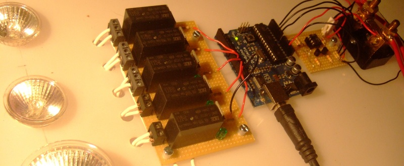
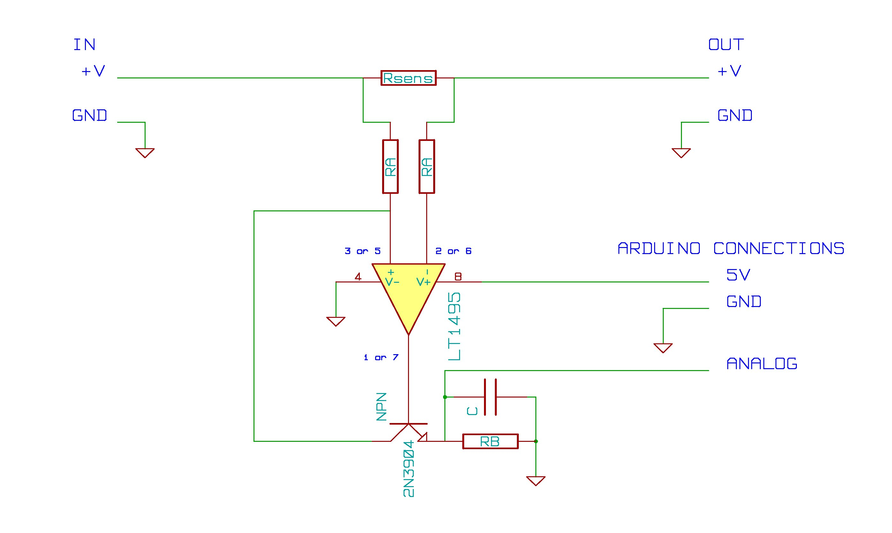
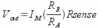

Measuring DC current with an LT1495
Important: In the end I found the dc shunt solution below to be more expensive and less reliable than using some nice pre built modules from cool components:
Voltage and current monitoring:
http://www.coolcomponents.co.uk/catalog/attopilot-voltage-current-sense-...
Current only monitoring
http://www.coolcomponents.co.uk/catalog/acs715-current-sensor-breakout-p...
--------------------------
For reference
Updated 24June 2010: Corrections and detailed calibration procedure

Picture: is of the DC current meter on the right of the Arduino and the load controller on the left.
Introduction
This page details how to build a DC current sensing circuit using a current sensing resistor and an LT1495 op amp. It can be used for high current applications such as measuring energy production from microrenewables or low power applications by selecting suitable component values.
Component list
1x Arduino
Current sensing resistors
There are many current sensing resistors available. Here are two suggestions. I'm using the first one at the moment, but would like to try the second when I get a chance.
1x 0.0005 Ohm current sensing resistor rated at max 100A. farnell
or
1x 0.005 Ohm current sensing resistor rated at max 31A farnell
Sensing circuit
The LT1495 has two op amps. If you need two current sensors, the second op amp on the LT1495 can be used. You will need 2 of all the other components in the circuit.
1x LT1495
1x 470kOhm resistors for RB
2x 10kOhm resistors for RA
1x 2N3904 transistors
1x 22nf capacitor for C
Circuit Schematic
{kind=link}

Current measurment
The current is measured by measuring the voltage drop across a low resistance. This voltage is amplified by the LT1495 op amp and the 2N3904 transistor. The amplified output voltage is connected to an Arduino analog input.
The range of current that can be measured by the circuit is defined by Rsens, RA, RB and the Arduino analog reference voltage.
The Voltage out from the current sensing circuit is given by:

Note: I will add a worked example here soon.
Software
The Arduino Sketch
The Arduino along with the Arduino sketch reads in the ADC value that corresponds to the voltage at the analog input pin. It then converts the ADC value to a current value. The current sensor DC library is intended to make all this a little more straightforward. The main commands to get the sensor running are:
Include the library:
#include "CurrentSensorDC.h"
Create a DC sensor: nameOfSensor(analog input pin, calibration value m, calibration value c):
CurrentSensorDC sensorA( 0 , 1.0 , 0.0 );
Returns the current value as a floating point number:
sensorA.getCurrent();
Download the CurrentSensorDC library here: CurrentSensorDC.tar.gz
Download the Arduino Sketch here: CurrentSensorDCExample.tar.gz
Copy the library to your Arduino/Libraries folder then compile and upload the Sketch to the Arduino.
If you now go to the Arduino Serial monitor you should see a stream of floating point values.
At this point, the program is not calibrated, the output corresponds to the ADC value. Tto see current values, the next step is:
Calibration
2 point calibration procedure.
1) Take a reading from the Arduino monitor and reference meter (digital multimeter dmm) at 0 current.
For example: Emon: 1.70 dmm: 0.00A
2) Take a reading from Arduino monitor and reference meter (dmm) at a current value close to the maximum current you intend to measure.
For example: Emon: 182.5 dmm: 8.08A
3) Use the equation of a straight line (y=mx + c) to find the calibration.
y1 = dmm 0 current. y2 = dmm max current.
x1 = emon value at 0 current x2 = emon value at max current
y1 = mx1 + c : y2 = mx2 + c
Rearranging to find m and c:
m = (y2 – y1) / (x2 – x1) and c = y1 – mx1
With the example values from set one and two the calibration values are:
m = 0.044690265 : c = −0.075973451
4) Insert the calibration values into the Arduino sketch at the following lines:
CurrentSensorDC sensorA(0, m , c );
If all is well, you should now read current!
Accuracy
I obtained the following accuracy below with circuit configured for 0 to 46Amps, but test range 0 - 10A due to max 10A range of DMM.
I tested 8 points along the 0 to 10A range, by no means a comprehensive test, but a useful indication of accuracy nonetheless.
Standard deviation of the error: 0.01A
Maximum error: 0.02A
Further Development
It would be good to explore use of the cheaper shunts linked above.
Further Reading
The LT1495 circuit above is adapted from the linear technologies application notes on DC current sensing that can be found here (There's also a lot of other interesting info there too):
http://www.linear.com/ad/current_sense
Article on high versus low side current sensing:
Low-side vs. high-side current sensing by Arpit Mehta
Use Example
Hugh Piggott Wind turbines
The reason I needed a DC energy monitor.
North Wales wind turbine built on a course organised by me and V3 Power.
Cardiff EWB wind turbine built as a training project with the Cardiff branch of Engineers Without Borders.
Both wind turbine are 12V DC machines. They can produce ~500W of power, about 40Amps.
For more information on Hugh Piggott and his wind turbine designs.
Pictures of the wind turbine up in late July 2009. It was the first test of the wind turbine energy monitoring:
{kind=link}
{kind=link}
{kind=link}
{kind=link}
{kind=link}
{kind=link}
Here's a video of it all working, sorry about the rushed and blurry video taking...
Monitoring the output of the wind turbine. from Trystan Lea on Vimeo.
Re: DC shunt
Hi folks,
if anyone has any thoughts on the following i would be very interested.
I have been trying to build a battery monitor using the Battery Monitor Circuit with the LT1495 OpAmp. I am getting strange results.
Ultimately i want to measure current up to 150amps in a 24v circuit. I have chosen a 200a 75mv shunt, as i can also use it with my PL20 solar/wind regulator eventually if I choose.
Vcc is 5v.
Rsense is 0.000375 ohm (200a, 75mA Shunt)
Ra=3k and Rb=220k.
Without the shunt connected to a battery circuit, I measure 0v across the shunt with my DMM.
However For both Vout im getting non zero values.
What is even more strange is that im getting up to 11v. Yet VCC is only 5v and I have no other voltage source connected. I have checked and doubled checked the DMM range and all other values like the power supply, batteries etc are all measuring accurately.
It gets even more strange when i connect the shunt into the battery circuit. With only 1amp being drawn Vout is giving me 28v!...
Im glad i didnt hook up my arduino to the circuit before testing....i would have made magic smoke.
Any guidance you could provide would be much appreciated.
thanks in advance
cheers
Andrew
Re: DC shunt
hi,
could anyone have the answer for this. Please share the solution as I'm also facing this type of problem. checked a few times, circuit was right.
thanks
Re: DC shunt
Trystian im going to use ur electronic,(current) diagram for a personal project.
thanks for sharing all info you give, hi from mexico.(I consider mi self an arduino/avr FAN)
Re: DC shunt
Hey ebox, awesome, good luck with your project!
Re: DC shunt
Nice project Trystan I plan on encorporating this power monitor into my ECE senior design. I was wondering if it was at all possible to program the arduino and run the computer side software on windows.
Re: DC shunt
Hey Nathan, it should be possible without much work, programming the arduino is the same you just download the windows version of the arduino IDE off the arduino site here: http://arduino.cc. As for the computer side software the way the computer side works is that you first read the data from the arduino with the ArduinoComm program and then access the data with a graphing program like KST. KST for windows can be downloaded here: http://kst.kde.org/. I havent tried to run ArduinoComm in windows yet but I imagine a couple of things would need to be changed to port it over to windows. If you have a look for tutorials on installing and starting with Java Development Kit that would probably be a good point to start, once youve got programs compiling and running then converting arduinoComm to run on windows hopefully wont be too much work.
Good luck with your project
Trystan
Re: DC shunt
Hey Trystan, I was also wondering why your wind generator only outputs 12V as you will need around 13.5 or so to charge your battery bank. Do you have some sort of boost converter at the input of the battery bank or are you're batteries smaller then 12v?
Re: DC shunt
Hey Nathan, a yes these things are usually called either 12V, 24V, 48V turbines. The actual voltage will vary between 0 and say 14.4V for a "12V" turbine depending on the speed of rotation of the turbine. So as the wind picks up the turbine spins up and the voltage climbs up to about 13.1V - 13.5V as you say when the batteries can start to be charged. As long as you have enough batteries they should then load the turbine in such a way as to keep the voltage from going above ideally about 13.8V. One then uses a dump load controller and dump loads to stop the voltage from climbing much higher for long lengths of time.
Re: DC shunt
For a lower-cost alternative, you might look at using one or two MAX4392 current-sense amplifiers. Not available as DIP package, though.
-jcw
Re: DC shunt
As I understand the datasheet the LM358 will take a common mode input up to 28.5 V when running off a 5 V supply. Cheap and available in DIP. I was doodling a similar design myself the other day (for monitoring currents into and out of a battery bank via an Arduino) but I have other priorities than actually making such a thing for the moment.